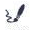
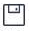

<!DOCTYPE html>
<html lang="en">
<head>
    <meta charset="UTF-8">
    <meta name="viewport" content="width=device-width, initial-scale=1.0">
    <title>移动端涂鸦</title>
    <style>
        html,body,.wrapper{height:100%}
        .wrapper{position:relative;padding-bottom: 60px;box-sizing: border-box;}
        .wrapper .offCanvas,.wrapper .canvas{position: absolute;top: 0;left: 0;}
        .footer{position: absolute;bottom: 0;width: 100%;height: 60px;background-color: #fff;box-shadow: 0 0 10px 3px #e2e2e2;}
        .footer .control-button{display: flex;}
        .control-button .item{flex:1;text-align: center;}
        .control-button .item img{width: 22px;height: 22px;margin-top: 8px;}
        .control-button .item span{display: block;margin-top: 3px;color:#2e344a;font-size:12px}
    </style>
</head>
<body>
    <div class="wrapper">
        <canvas class="offCanvas"></canvas>
        <canvas class="canvas"></canvas>
    </div>
    <div class="footer">
        <div class="control-button">
            <div class="item colorsButton"><span>黑色</span></div>
            <div class="item brushButton"><span>中笔</span></div>
            <div class="item bgButton"><span>背景</span></div>
            <div class="item rubberButton"><span>擦除</span></div>
            <div class="item clearButton"><span>清屏</span></div>
            <div class="item saveButton"><span>保存</span></div>
        </div>
    </div>
    <script src="https://cdn.bootcdn.net/ajax/libs/jquery/2.2.4/jquery.min.js"></script>
    <script>
        $(function(){
            var offCanvas = $('.offCanvas')[0]; //用于背景
            var offCtx = offCanvas.getContext('2d');
            var canvas = $('.canvas')[0]; //用于涂鸦
            var ctx = canvas.getContext('2d');

            var lastCoordinate = null; //前一个坐标
            var lastTimestamp = 0; //前一个时间戳
            var lastLineWidth = -1; //线光滑过渡
            var point = null; //存储鼠标或触摸坐标
            var brushWidth = 20; //中笔触计算值
            var footerHeight = $('.footer').height(); //获取底部高度

            offCanvas.width = canvas.width = $(window).width();
            offCanvas.height = canvas.height = $(window).height() - footerHeight;

            //根据速度计算线宽
            function calcLineWidth(s,t,brushWidth) {
                var v = s / t;
                var maxVelocity = 10,
                    minVelocity = 0.1,
                    maxLineWidth = Math.min(30,canvas.width/brushWidth), //避免手机端线条太粗
                    minLineWidth = 1,
                    resultLineWidth; //最终线条宽度
                if(v <= minVelocity){
                    resultLineWidth = maxLineWidth;
                } else if (v >= maxVelocity) {
                    resultLineWidth = minLineWidth;
                } else {
                    resultLineWidth = maxLineWidth - (v - minVelocity)/(maxVelocity - minVelocity)*(maxLineWidth-minLineWidth);
                }
                if(lastLineWidth == -1){
                    return resultLineWidth;
                } else {
                    return resultLineWidth * 2 / 3 + lastLineWidth * 1 / 3; //lastLineWidth占比越大越平滑
                }
            }

            //计算两点距离
            function calcDistance(lastCoordinate,curCoordinate) {
                var distance = Math.sqrt(Math.pow(curCoordinate.x - lastCoordinate.x,2)+Math.pow(curCoordinate.y - lastCoordinate.y,2));
                return distance;
            }

            //坐标转换
            function windowToCanvas(x,y){
                var bbox = canvas.getBoundingClientRect();
                return {x:x-bbox.left,y:y-bbox.top};
            }

            //起点
            $('.canvas').on('touchstart',function(event){
                isMouseDown = true;
                point = {x:event.originalEvent.targetTouches[0].clientX,y:event.originalEvent.targetTouches[0].clientY};
                lastCoordinate = windowToCanvas(point.x,point.y);
                lastTimestamp = new Date().getTime();
            });

            //移动
            $('.canvas').on('touchmove',function(event){
                point = {x:event.originalEvent.targetTouches[0].clientX,y:event.originalEvent.targetTouches[0].clientY};
                var curCoordinate = windowToCanvas(point.x,point.y);
                var curTimestamp = new Date().getTime();

                var s = calcDistance(lastCoordinate,curCoordinate);
                var t = curTimestamp - lastTimestamp;
                var curLineWidth = calcLineWidth(s,t,brushWidth);

                drawLine(ctx,lastCoordinate.x,lastCoordinate.y,curCoordinate.x,curCoordinate.y,curLineWidth);

                lastCoordinate = curCoordinate;
                lastTimestamp = curTimestamp;
                lastLineWidth = curLineWidth;
            });

            //画线
            function drawLine(context,x1,y1,x2,y2,lineWidth,strokeColor){
                context.beginPath();
                context.lineTo(x1,y1);
                context.lineTo(x2,y2);

                context.lineWidth = lineWidth;
                context.lineCap = 'round'; //线与线交合不产生空隙
                context.lineJoin = 'round';
                context.strokeColor = strokeColor || '#000';

                context.stroke();
            }
        });
    </script>
</body>
</html>
